CODING AGENTS AS PIXEL WORLD MODELS
traex/DeepSeek-V4.1-Flash · 0056
点击播放 · 原生 RGB 像素
逐轮保存的候选
回放视频、检查图与代码变化。
每份候选均可单独播放。实际图片检查记录在下方工具轨迹中。
候选 01播放与检查图
点击播放 · 原生 RGB 像素
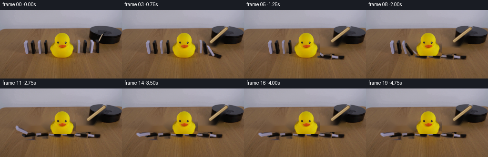
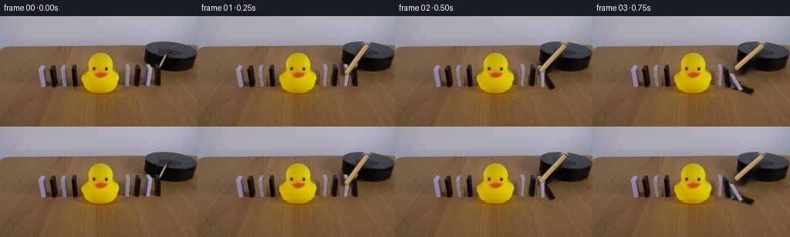
展开代码变化
--- 上一保存版本
+++ 本次保存版本
@@ -0,0 +1,308 @@
+from __future__ import annotations
+
+from dataclasses import dataclass
+from pathlib import Path
+
+import cv2
+import numpy as np
+from PIL import Image, ImageDraw, ImageFilter
+
+import artifact_io
+
+
+W, H = 256, 144
+FPS = 4
+FRAME_COUNT = 20
+CASE_DIR = Path(__file__).resolve().parent
+
+
+@dataclass(frozen=True)
+class BlockSpec:
+ center_x: float
+ kind: str
+ bbox: tuple[int, int, int, int] | None = None
+ width: float = 0.0
+
+
+# Left-to-right. The four middle blocks are hidden by the duck in frame zero.
+BLOCKS = [
+ BlockSpec(54, "white", (47, 62, 60, 94)),
+ BlockSpec(67, "black", (58, 60, 76, 94)),
+ BlockSpec(82, "white", (76, 61, 88, 94)),
+ BlockSpec(96, "black", (88, 60, 103, 94)),
+ BlockSpec(110, "white", width=9.0),
+ BlockSpec(123, "black", width=12.0),
+ BlockSpec(137, "white", width=9.0),
+ BlockSpec(151, "black", width=12.0),
+ BlockSpec(165, "white", (160, 61, 171, 94)),
+ BlockSpec(178, "black", (171, 60, 185, 94)),
+ BlockSpec(192, "white", (187, 61, 200, 94)),
+ BlockSpec(205, "black", (199, 61, 213, 94)),
+]
+
+
+def fill_holes(mask: np.ndarray) -> np.ndarray:
+ flood = mask.copy()
+ h, w = flood.shape
+ flood_pad = np.zeros((h + 2, w + 2), np.uint8)
+ cv2.floodFill(flood, flood_pad, (0, 0), 255)
+ holes = cv2.bitwise_not(flood)
+ return cv2.bitwise_or(mask, holes)
+
+
+def clean_alpha(mask: np.ndarray, dilate: int = 1) -> np.ndarray:
+ mask = (mask.astype(np.uint8) * 255)
+ mask = cv2.morphologyEx(mask, cv2.MORPH_CLOSE, np.ones((3, 3), np.uint8))
+ mask = fill_holes(mask)
+ count, labels, stats, _ = cv2.connectedComponentsWithStats(mask)
+ if count > 1:
+ index = 1 + int(np.argmax(stats[1:, cv2.CC_STAT_AREA]))
+ mask = np.where(labels == index, 255, 0).astype(np.uint8)
+ if dilate:
+ mask = cv2.dilate(mask, np.ones((3, 3), np.uint8), iterations=dilate)
+ return mask
+
+
+def extract_block(original: np.ndarray, spec: BlockSpec) -> tuple[np.ndarray, tuple[float, float]]:
+ assert spec.bbox is not None
+ x0, y0, x1, y1 = spec.bbox
+ crop = original[y0:y1, x0:x1]
+ r = crop[:, :, 0].astype(np.int16)
+ g = crop[:, :, 1].astype(np.int16)
+ b = crop[:, :, 2].astype(np.int16)
+ maximum = np.maximum(np.maximum(r, g), b)
+ if spec.kind == "white":
+ candidate = (b > r + 1) & (b > g - 2) & (maximum > 78)
+ else:
+ candidate = maximum < 103
+ alpha = clean_alpha(candidate, dilate=1)
+ # Keep the block from acquiring background pixels around its beveled corners.
+ silhouette = np.zeros_like(alpha)
+ cv2.rectangle(silhouette, (1, 2), (crop.shape[1] - 2, crop.shape[0] - 2), 255, -1)
+ cv2.rectangle(silhouette, (2, 0), (crop.shape[1] - 2, 3), 255, -1)
+ alpha = cv2.bitwise_and(alpha, silhouette)
+ alpha = cv2.GaussianBlur(alpha, (3, 3), 0.45)
+
+ rgba = np.dstack([crop, alpha]).astype(np.uint8)
+ pivot = (float(x1 - 1.5), 92.0)
+ return rgba, pivot
+
+
+def resize_rgba(rgba: np.ndarray, width: int) -> np.ndarray:
+ h, w = rgba.shape[:2]
+ height = max(1, round(h * width / w))
+ return cv2.resize(rgba, (width, height), interpolation=cv2.INTER_LINEAR)
+
+
+def full_canvas(rgba: np.ndarray, x: float, y: float) -> np.ndarray:
+ canvas = np.zeros((H, W, 4), np.uint8)
+ x = int(round(x))
+ y = int(round(y))
+ h, w = rgba.shape[:2]
+ sx0, sy0 = max(0, -x), max(0, -y)
+ dx0, dy0 = max(0, x), max(0, y)
+ copy_w = min(w - sx0, W - dx0)
+ copy_h = min(h - sy0, H - dy0)
+ if copy_w > 0 and copy_h > 0:
+ canvas[dy0 : dy0 + copy_h, dx0 : dx0 + copy_w] = rgba[
+ sy0 : sy0 + copy_h, sx0 : sx0 + copy_w
+ ]
+ return canvas
+
+
+def build_duck(original: np.ndarray) -> tuple[np.ndarray, tuple[int, int]]:
+ x0, y0, x1, y1 = 106, 42, 159, 96
+ crop = original[y0:y1, x0:x1]
+ r = crop[:, :, 0].astype(np.int16)
+ g = crop[:, :, 1].astype(np.int16)
+ b = crop[:, :, 2].astype(np.int16)
+ yellow = (r > 125) & (g > 105) & (b < 95) & (r > b + 45)
+ orange = (r > 155) & (g > 55) & (g < 165) & (b < 80)
+ candidate = yellow | orange
+ alpha = clean_alpha(candidate, dilate=1)
+ alpha = cv2.GaussianBlur(alpha, (3, 3), 0.55)
+ rgba = np.dstack([crop, alpha]).astype(np.uint8)
+ return rgba, (x0, y0)
+
+
+def build_clean_plate(
+ original: np.ndarray, duck_rgba: np.ndarray, duck_xy: tuple[int, int]
+) -> np.ndarray:
+ mask = np.zeros((H, W), np.uint8)
+ for spec in BLOCKS:
+ if spec.bbox is None:
+ continue
+ x0, y0, x1, y1 = spec.bbox
+ mask[y0:y1, x0:x1] = 255
+
+ # Remove the duck and the stick while leaving the platform and table intact.
+ dx, dy = duck_xy
+ duck_alpha = duck_rgba[:, :, 3]
+ duck_mask = np.zeros((H, W), np.uint8)
+ duck_mask[dy : dy + duck_alpha.shape[0], dx : dx + duck_alpha.shape[1]] = duck_alpha
+ mask = cv2.bitwise_or(mask, duck_mask)
+ cv2.line(mask, (219, 38), (196, 77), 255, 7, cv2.LINE_AA)
+ mask = cv2.dilate(mask, np.ones((3, 3), np.uint8), iterations=1)
+ return cv2.inpaint(original, mask, 5, cv2.INPAINT_TELEA)
+
+
+def make_domino_assets(original: np.ndarray) -> list[tuple[np.ndarray, tuple[float, float]]]:
+ extracted: dict[str, tuple[np.ndarray, tuple[float, float]]] = {}
+ for spec in BLOCKS:
+ if spec.bbox is not None:
+ extracted[spec.kind + str(int(spec.center_x))] = extract_block(original, spec)
+
+ white_template = extracted["white165"][0]
+ black_template = extracted["black178"][0]
+ white_left_template = extracted["white54"][0]
+ black_left_template = extracted["black67"][0]
+
+ assets: list[tuple[np.ndarray, tuple[float, float]]] = []
+ for spec in BLOCKS:
+ if spec.bbox is not None:
+ rgba, pivot = extracted[spec.kind + str(int(spec.center_x))]
+ x0, y0, _, _ = spec.bbox
+ assets.append((full_canvas(rgba, x0, y0), pivot))
+ continue
+
+ template = white_template if spec.kind == "white" else black_template
+ if spec.center_x < 100:
+ template = white_left_template if spec.kind == "white" else black_left_template
+ rgba = resize_rgba(template, int(round(spec.width)))
+ h, w = rgba.shape[:2]
+ pivot = (spec.center_x + spec.width / 2.0, 92.0)
+ assets.append((full_canvas(rgba, pivot[0] - w + 1, 92.0 - h + 1), pivot))
+ return assets
+
+
+def warp_rgba(rgba: np.ndarray, pivot: tuple[float, float], angle: float) -> tuple[np.ndarray, np.ndarray]:
+ alpha = rgba[:, :, 3].astype(np.float32) / 255.0
+ premultiplied = rgba[:, :, :3].astype(np.float32) * alpha[:, :, None]
+ matrix = cv2.getRotationMatrix2D(pivot, angle, 1.0)
+ warped_rgb = cv2.warpAffine(
+ premultiplied, matrix, (W, H), flags=cv2.INTER_LINEAR, borderMode=cv2.BORDER_CONSTANT
+ )
+ warped_alpha = cv2.warpAffine(
+ alpha, matrix, (W, H), flags=cv2.INTER_LINEAR, borderMode=cv2.BORDER_CONSTANT
+ )
+ safe_alpha = np.maximum(warped_alpha, 1e-5)
+ rgb = np.clip(warped_rgb / safe_alpha[:, :, None], 0, 255)
+ return rgb, warped_alpha
+
+
+def composite(frame: np.ndarray, rgb: np.ndarray, alpha: np.ndarray, opacity: float = 1.0) -> None:
+ a = np.clip(alpha * opacity, 0, 1)[:, :, None]
+ frame[:] = np.clip(frame.astype(np.float32) * (1.0 - a) + rgb * a, 0, 255).astype(np.uint8)
+
+
+def paste_rgba(frame: np.ndarray, rgba: np.ndarray, x: int, y: int) -> None:
+ h, w = rgba.shape[:2]
+ alpha = rgba[:, :, 3].astype(np.float32) / 255.0
+ region = frame[y : y + h, x : x + w].astype(np.float32)
+ src = rgba[:, :, :3].astype(np.float32)
+ frame[y : y + h, x : x + w] = np.clip(
+ region * (1 - alpha[:, :, None]) + src * alpha[:, :, None], 0, 255
+ ).astype(np.uint8)
+
+
+def add_shadows(frame: np.ndarray, angles: list[float]) -> None:
+ layer = Image.new("RGBA", (W, H), (0, 0, 0, 0))
+ draw = ImageDraw.Draw(layer)
+ for spec, angle in zip(BLOCKS, angles):
+ pivot_x = spec.center_x + (spec.width or 7.0) / 2.0
+ if spec.bbox is not None:
+ pivot_x = spec.bbox[2] - 1.5
+ reach = 24.0 * np.sin(np.deg2rad(min(angle, 90.0)))
+ x0 = pivot_x - 4.0 - reach
+ x1 = pivot_x + 4.0
+ draw.line((x0, 92.5, x1, 92.5), fill=(50, 33, 19, 36), width=3)
+ draw.ellipse((pivot_x - 6, 90.5, pivot_x + 6, 94.5), fill=(48, 31, 18, 24))
+ layer = layer.filter(ImageFilter.GaussianBlur(1.15))
+ frame[:] = np.clip(
+ frame.astype(np.float32) * (1 - np.asarray(layer)[:, :, 3:4].astype(np.float32) / 255.0)
+ + np.asarray(layer)[:, :, :3].astype(np.float32)
+ * (np.asarray(layer)[:, :, 3:4].astype(np.float32) / 255.0),
+ 0,
+ 255,
+ ).astype(np.uint8)
+
+
+def draw_stick(frame: np.ndarray, t: float) -> None:
+ delta = min(22.0, 22.0 * min(1.0, max(0.0, t / 0.9)))
+ pivot = np.array([219.0, 38.0], dtype=np.float32)
+ vector = np.array([-22.0, 38.0], dtype=np.float32)
+ theta = np.deg2rad(delta)
+ rotated = np.array(
+ [
+ vector[0] * np.cos(theta) - vector[1] * np.sin(theta),
+ vector[0] * np.sin(theta) + vector[1] * np.cos(theta),
+ ],
+ dtype=np.float32,
+ )
+ end = pivot + rotated
+ start = tuple(np.round(pivot).astype(int))
+ finish = tuple(np.round(end).astype(int))
+ cv2.line(frame, start, finish, (104, 78, 50), 5, cv2.LINE_AA)
+ cv2.line(frame, start, finish, (174, 145, 99), 3, cv2.LINE_AA)
+ cv2.line(
+ frame,
+ (start[0] - 1, start[1] - 1),
+ (finish[0] - 1, finish[1] - 1),
+ (205, 177, 132),
+ 1,
+ cv2.LINE_AA,
+ )
+
+
+def domino_angle(t: float, index: int) -> float:
+ start = 0.16 + (11 - index) * 0.19
+ u = float(np.clip((t - start) / 0.68, 0.0, 1.0))
+ if u <= 0.0:
+ return 0.0
+ # Gravity makes the initial tip slow, followed by a firm landing.
+ angle = 89.0 * (u**1.42) * (1.0 - 0.035 * np.sin(np.pi * u))
+ return float(min(89.0, angle))
+
+
+def render() -> list[np.ndarray]:
+ original = np.asarray(Image.open(CASE_DIR / "first_frame.png").convert("RGB"), dtype=np.uint8)
+ assert original.shape == (H, W, 3)
+
+ duck_rgba, duck_xy = build_duck(original)
+ plate = build_clean_plate(original, duck_rgba, duck_xy)
+ dominoes = make_domino_assets(original)
+
+ frames: list[np.ndarray] = []
+ for frame_index in range(FRAME_COUNT):
+ if frame_index == 0:
+ frames.append(original.copy())
+ continue
+
+ t = frame_index / FPS
+ frame = plate.copy()
+ angles = [domino_angle(t, i) for i in range(len(BLOCKS))]
+ add_shadows(frame, angles)
+
+ # Right-to-left compositing makes each newly falling block overlap the one
+ # that struck it, producing the characteristic leaning domino fan.
+ for index in range(len(BLOCKS) - 1, -1, -1):
+ rgba, pivot = dominoes[index]
+ rgb, alpha = warp_rgba(rgba, pivot, angles[index])
+ composite(frame, rgb, alpha)
+
+ draw_stick(frame, t)
+ paste_rgba(frame, duck_rgba, duck_xy[0], duck_xy[1])
+ frames.append(frame)
+
+ return frames
+
+
+def main() -> None:
+ frames = render()
+ assert len(frames) == FRAME_COUNT
+ assert np.array_equal(frames[0], np.asarray(Image.open(CASE_DIR / "first_frame.png").convert("RGB")))
+ artifact_io.save(frames, CASE_DIR)
+
+
+if __name__ == "__main__":
+ main()
候选 02播放与检查图
点击播放 · 原生 RGB 像素

展开代码变化
--- 上一保存版本
+++ 本次保存版本
@@ -26,18 +26,18 @@
# Left-to-right. The four middle blocks are hidden by the duck in frame zero.
BLOCKS = [
- BlockSpec(54, "white", (47, 62, 60, 94)),
- BlockSpec(67, "black", (58, 60, 76, 94)),
- BlockSpec(82, "white", (76, 61, 88, 94)),
- BlockSpec(96, "black", (88, 60, 103, 94)),
+ BlockSpec(53, "white", (48, 62, 59, 93)),
+ BlockSpec(68, "black", (60, 62, 76, 93)),
+ BlockSpec(82, "white", (78, 62, 86, 93)),
+ BlockSpec(97, "black", (92, 62, 102, 93)),
BlockSpec(110, "white", width=9.0),
- BlockSpec(123, "black", width=12.0),
- BlockSpec(137, "white", width=9.0),
- BlockSpec(151, "black", width=12.0),
- BlockSpec(165, "white", (160, 61, 171, 94)),
- BlockSpec(178, "black", (171, 60, 185, 94)),
- BlockSpec(192, "white", (187, 61, 200, 94)),
- BlockSpec(205, "black", (199, 61, 213, 94)),
+ BlockSpec(123, "black", width=11.0),
+ BlockSpec(136, "white", width=9.0),
+ BlockSpec(150, "black", width=11.0),
+ BlockSpec(165, "white", (162, 62, 169, 93)),
+ BlockSpec(179, "black", (174, 62, 184, 93)),
+ BlockSpec(193, "white", (189, 62, 197, 93)),
+ BlockSpec(204, "black", (199, 62, 209, 93)),
]
@@ -67,24 +67,11 @@
assert spec.bbox is not None
x0, y0, x1, y1 = spec.bbox
crop = original[y0:y1, x0:x1]
- r = crop[:, :, 0].astype(np.int16)
- g = crop[:, :, 1].astype(np.int16)
- b = crop[:, :, 2].astype(np.int16)
- maximum = np.maximum(np.maximum(r, g), b)
- if spec.kind == "white":
- candidate = (b > r + 1) & (b > g - 2) & (maximum > 78)
- else:
- candidate = maximum < 103
- alpha = clean_alpha(candidate, dilate=1)
- # Keep the block from acquiring background pixels around its beveled corners.
- silhouette = np.zeros_like(alpha)
- cv2.rectangle(silhouette, (1, 2), (crop.shape[1] - 2, crop.shape[0] - 2), 255, -1)
- cv2.rectangle(silhouette, (2, 0), (crop.shape[1] - 2, 3), 255, -1)
- alpha = cv2.bitwise_and(alpha, silhouette)
- alpha = cv2.GaussianBlur(alpha, (3, 3), 0.45)
-
+ alpha = np.full(crop.shape[:2], 255, np.uint8)
+ alpha[0, 0] = alpha[0, -1] = 0
+ alpha = cv2.GaussianBlur(alpha, (3, 3), 0.3)
rgba = np.dstack([crop, alpha]).astype(np.uint8)
- pivot = (float(x1 - 1.5), 92.0)
+ pivot = (float(x0), 92.0)
return rgba, pivot
@@ -113,14 +100,7 @@
def build_duck(original: np.ndarray) -> tuple[np.ndarray, tuple[int, int]]:
x0, y0, x1, y1 = 106, 42, 159, 96
crop = original[y0:y1, x0:x1]
- r = crop[:, :, 0].astype(np.int16)
- g = crop[:, :, 1].astype(np.int16)
- b = crop[:, :, 2].astype(np.int16)
- yellow = (r > 125) & (g > 105) & (b < 95) & (r > b + 45)
- orange = (r > 155) & (g > 55) & (g < 165) & (b < 80)
- candidate = yellow | orange
- alpha = clean_alpha(candidate, dilate=1)
- alpha = cv2.GaussianBlur(alpha, (3, 3), 0.55)
+ alpha = np.full(crop.shape[:2], 255, np.uint8)
rgba = np.dstack([crop, alpha]).astype(np.uint8)
return rgba, (x0, y0)
@@ -135,12 +115,8 @@
x0, y0, x1, y1 = spec.bbox
mask[y0:y1, x0:x1] = 255
- # Remove the duck and the stick while leaving the platform and table intact.
- dx, dy = duck_xy
- duck_alpha = duck_rgba[:, :, 3]
- duck_mask = np.zeros((H, W), np.uint8)
- duck_mask[dy : dy + duck_alpha.shape[0], dx : dx + duck_alpha.shape[1]] = duck_alpha
- mask = cv2.bitwise_or(mask, duck_mask)
+ # The duck is stationary, so its exact source pixels can be restored after
+ # the movable objects have been removed from the plate.
cv2.line(mask, (219, 38), (196, 77), 255, 7, cv2.LINE_AA)
mask = cv2.dilate(mask, np.ones((3, 3), np.uint8), iterations=1)
return cv2.inpaint(original, mask, 5, cv2.INPAINT_TELEA)
@@ -153,9 +129,9 @@
extracted[spec.kind + str(int(spec.center_x))] = extract_block(original, spec)
white_template = extracted["white165"][0]
- black_template = extracted["black178"][0]
- white_left_template = extracted["white54"][0]
- black_left_template = extracted["black67"][0]
+ black_template = extracted["black179"][0]
+ white_left_template = extracted["white53"][0]
+ black_left_template = extracted["black68"][0]
assets: list[tuple[np.ndarray, tuple[float, float]]] = []
for spec in BLOCKS:
@@ -170,8 +146,8 @@
template = white_left_template if spec.kind == "white" else black_left_template
rgba = resize_rgba(template, int(round(spec.width)))
h, w = rgba.shape[:2]
- pivot = (spec.center_x + spec.width / 2.0, 92.0)
- assets.append((full_canvas(rgba, pivot[0] - w + 1, 92.0 - h + 1), pivot))
+ pivot = (spec.center_x - spec.width / 2.0, 92.0)
+ assets.append((full_canvas(rgba, pivot[0], 92.0 - h + 1), pivot))
return assets
@@ -209,12 +185,12 @@
layer = Image.new("RGBA", (W, H), (0, 0, 0, 0))
draw = ImageDraw.Draw(layer)
for spec, angle in zip(BLOCKS, angles):
- pivot_x = spec.center_x + (spec.width or 7.0) / 2.0
+ pivot_x = spec.center_x - (spec.width or 7.0) / 2.0
if spec.bbox is not None:
- pivot_x = spec.bbox[2] - 1.5
- reach = 24.0 * np.sin(np.deg2rad(min(angle, 90.0)))
- x0 = pivot_x - 4.0 - reach
- x1 = pivot_x + 4.0
+ pivot_x = spec.bbox[0]
+ reach = 25.0 * np.sin(np.deg2rad(min(angle, 88.0)))
+ x0 = pivot_x - 2.0
+ x1 = pivot_x + 4.0 + reach
draw.line((x0, 92.5, x1, 92.5), fill=(50, 33, 19, 36), width=3)
draw.ellipse((pivot_x - 6, 90.5, pivot_x + 6, 94.5), fill=(48, 31, 18, 24))
layer = layer.filter(ImageFilter.GaussianBlur(1.15))
@@ -255,13 +231,14 @@
def domino_angle(t: float, index: int) -> float:
- start = 0.16 + (11 - index) * 0.19
- u = float(np.clip((t - start) / 0.68, 0.0, 1.0))
+ start = 0.22 + (11 - index) * 0.20
+ u = float(np.clip((t - start) / 0.70, 0.0, 1.0))
if u <= 0.0:
return 0.0
- # Gravity makes the initial tip slow, followed by a firm landing.
- angle = 89.0 * (u**1.42) * (1.0 - 0.035 * np.sin(np.pi * u))
- return float(min(89.0, angle))
+ # A domino accelerates from rest, then leans against its left neighbour.
+ target = 87.0 if index == 0 else 51.0
+ angle = target * (1.0 - np.cos(0.5 * np.pi * u))
+ return float(min(target, angle))
def render() -> list[np.ndarray]:
候选 03播放与检查图
候选 04播放与检查图
点击播放 · 原生 RGB 像素

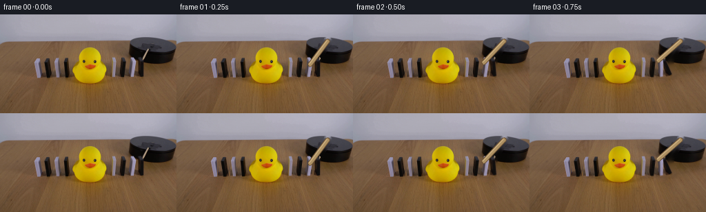
展开代码变化
--- 上一保存版本
+++ 本次保存版本
@@ -81,6 +81,37 @@
return cv2.resize(rgba, (width, height), interpolation=cv2.INTER_LINEAR)
+def geometric_block(kind: str, width: int = 8, height: int = 32) -> np.ndarray:
+ rgba = np.zeros((height, width, 4), np.uint8)
+ yy, xx = np.mgrid[:height, :width]
+ edge_x = np.minimum(xx, width - 1 - xx)
+ edge_y = np.minimum(yy, height - 1 - yy)
+ alpha = np.clip(np.minimum(edge_x, edge_y) * 255.0, 0, 255).astype(np.uint8)
+ alpha[1:-1, 1:-1] = 255
+ if kind == "white":
+ base = np.array([145, 133, 153], np.float32)
+ light = np.array([184, 177, 199], np.float32)
+ dark = np.array([93, 82, 101], np.float32)
+ # The source blocks have a bright cool bevel and a narrow lavender face.
+ shade = np.zeros((height, width), np.float32)
+ shade += np.clip((1.5 - xx) / 2.0, 0, 1) * 0.40
+ shade += np.clip((xx - (width - 2.5)) / 2.0, 0, 1) * 0.18
+ shade -= np.clip((1.5 - yy) / 2.0, 0, 1) * 0.10
+ rgb = base[None, None, :] + shade[:, :, None] * (light - base)[None, None, :]
+ right = xx > width - 2
+ rgb[right] = dark
+ else:
+ base = np.array([24, 19, 17], np.float32)
+ rgb = np.broadcast_to(base, (height, width, 3)).copy()
+ rgb[:, :2] = np.array([61, 54, 57], np.float32)
+ rgb[:, -1] = np.array([10, 9, 8], np.float32)
+ rgb[0, :] = np.array([65, 58, 61], np.float32)
+ rgb[-2:, :] = np.array([15, 12, 10], np.float32)
+ rgba[:, :, :3] = np.clip(rgb, 0, 255).astype(np.uint8)
+ rgba[:, :, 3] = alpha
+ return rgba
+
+
def full_canvas(rgba: np.ndarray, x: float, y: float) -> np.ndarray:
canvas = np.zeros((H, W, 4), np.uint8)
x = int(round(x))
@@ -125,25 +156,21 @@
def make_domino_assets(original: np.ndarray) -> list[tuple[np.ndarray, tuple[float, float]]]:
extracted: dict[str, tuple[np.ndarray, tuple[float, float]]] = {}
for spec in BLOCKS:
- if spec.bbox is not None:
+ if spec.bbox is not None and spec.center_x not in (110, 123, 136, 150):
extracted[spec.kind + str(int(spec.center_x))] = extract_block(original, spec)
- white_template = extracted["white165"][0]
- black_template = extracted["black179"][0]
- white_left_template = extracted["white53"][0]
- black_left_template = extracted["black68"][0]
+ white_template = geometric_block("white")
+ black_template = geometric_block("black")
assets: list[tuple[np.ndarray, tuple[float, float]]] = []
for spec in BLOCKS:
- if spec.bbox is not None:
+ if spec.bbox is not None and spec.center_x not in (110, 123, 136, 150):
rgba, pivot = extracted[spec.kind + str(int(spec.center_x))]
x0, y0, _, _ = spec.bbox
assets.append((full_canvas(rgba, x0, y0), pivot))
continue
template = white_template if spec.kind == "white" else black_template
- if spec.center_x < 100:
- template = white_left_template if spec.kind == "white" else black_left_template
rgba = resize_rgba(template, int(round(spec.width)))
h, w = rgba.shape[:2]
pivot = (spec.center_x - spec.width / 2.0, 92.0)
@@ -191,8 +218,8 @@
reach = 25.0 * np.sin(np.deg2rad(min(angle, 88.0)))
x0 = pivot_x - 2.0
x1 = pivot_x + 4.0 + reach
- draw.line((x0, 92.5, x1, 92.5), fill=(50, 33, 19, 36), width=3)
- draw.ellipse((pivot_x - 6, 90.5, pivot_x + 6, 94.5), fill=(48, 31, 18, 24))
+ draw.line((x0, 92.5, x1, 92.5), fill=(50, 33, 19, 25), width=3)
+ draw.ellipse((pivot_x - 6, 90.5, pivot_x + 6, 94.5), fill=(48, 31, 18, 17))
layer = layer.filter(ImageFilter.GaussianBlur(1.15))
frame[:] = np.clip(
frame.astype(np.float32) * (1 - np.asarray(layer)[:, :, 3:4].astype(np.float32) / 255.0)
@@ -231,7 +258,7 @@
def domino_angle(t: float, index: int) -> float:
- start = 0.22 + (11 - index) * 0.20
+ start = 0.30 + (11 - index) * 0.20
u = float(np.clip((t - start) / 0.70, 0.0, 1.0))
if u <= 0.0:
return 0.0
可观测工具轨迹
实际执行的命令与返回图片。
命令 1exit 0
/bin/bash -c "pwd && rg --files -g 'prompt.txt' -g 'GENERATION_RULES.md' -g '*.py' -g '*.sh' -g '*.md' | sed -n '1,160p'"
命令 2exit 0
/bin/bash -c "sed -n '1,240p' prompt.txt"
命令 3exit 0
/bin/bash -c "sed -n '1,280p' GENERATION_RULES.md"
命令 4exit 0
/bin/bash -c "ls -la && find . -maxdepth 2 -type f -printf '%p %s bytes\\n' | sort | sed -n '1,200p'"
命令 5exit 0
/bin/bash -c "sed -n '1,260p' artifact_io.py"
命令 6exit 0
/bin/bash -c "sed -n '1,260p' player_template.html"
命令 7exit 0
/bin/bash -c "python - <<'PY'
from PIL import Image
im=Image.open('first_frame.png')
print(im.mode, im.size)
print(im.getpixel((0,0)), im.getpixel((255,143)))
PY"命令 8exit 0
/bin/bash -c "python - <<'PY'
from PIL import Image
im=Image.open('first_frame.png')
im.crop((0,35,256,120)).resize((1024,340)).save('.tmp/scene_crop.png')
PY"命令 9exit 0
/bin/bash -c "python - <<'PY'
from PIL import Image
im=Image.open('first_frame.png')
im.resize((1024,576), Image.Resampling.NEAREST).save('.tmp/first_4x.png')
PY"命令 10exit 0
/bin/bash -c "python - <<'PY'
from PIL import Image
im=Image.open('first_frame.png')
im.crop((140,55,230,110)).resize((900,550), Image.Resampling.NEAREST).save('.tmp/right_dominoes.png')
PY"命令 11exit 0
/bin/bash -c "python - <<'PY'
from PIL import Image
import numpy as np
im=np.array(Image.open('first_frame.png')).astype(int)
for x in [39,52,66,79,93,163,177,190,204]:
print('\\nx',x)
for y in range(57,94):
r,g,b=im[y,x]
if y%2==0:
print(y,(r,g,b),end='; ')
print()
PY"命令 12exit 0
/bin/bash -c "python - <<'PY'
from PIL import Image
im=Image.open('first_frame.png')
im.crop((170,20,256,80)).resize((860,600), Image.Resampling.NEAREST).save('.tmp/platform.png')
PY"命令 13exit 0
/bin/bash -c "python - <<'PY'
from PIL import Image
import numpy as np
im=np.array(Image.open('first_frame.png'))
# print rows ranges of bright white/light pixels around right blocks
for x in range(158,213):
ys=np.where((im[:,x].min(1)>105)&(im[:,x].mean(1)>120))[0]
ys=ys[(ys>50)&(ys<100)]
if len(ys): print(x, ys.min(),ys.max(), len(ys))
PY"命令 14exit 0
/bin/bash -c "python - <<'PY'
from PIL import Image
import numpy as np
im=np.array(Image.open('first_frame.png')).astype(float)
for y in range(50,94):
# print run at x 159..172
s=''
for x in range(158,174):
r,g,b=im[y,x]
if b-r>10: s+='W'
elif max(r,g,b)<50: s+='B'
elif r>100 and g>75: s+='.'
else: s+='?'
print(y,s)
PY"命令 15exit 0
/bin/bash -c "python - <<'PY'
from PIL import Image
import numpy as np
im=np.array(Image.open('first_frame.png')).astype(int)
# box values at specific points of first right white
for x,y in [(163,76),(164,76),(165,76),(166,76),(167,76),(168,76),(169,76),(163,89),(166,89),(160,92)]: print(x,y,im[y,x])
# print object mask-ish ranges
for y in [62,63,64,67,68,70,75,76,77,80,85,89,90,91]:
xs=np.where(np.max(np.abs(im[y,:, :]-np.array([120,95,70])),axis=1)>20)[0]
print(y, [(a,b) for a,b in zip(xs[np.r_[True,np.diff(xs)>1]],xs[np.r_[np.diff(xs)>1,True]]) if b>150])
PY"命令 16exit 0
/bin/bash -c "python - <<'PY' mods=['cv2','numpy','scipy','skimage','PIL'] for m in mods: try: mod=__import__(m); print(m,'yes',getattr(mod,'__version__','')) except Exception as e: print(m,'no',e) PY"
命令 17exit 0
/bin/bash -c "python - <<'PY'
from PIL import Image
import numpy as np
im=np.array(Image.open('first_frame.png'))
r,g,b=im[:,:,0].astype(int),im[:,:,1].astype(int),im[:,:,2].astype(int)
white=(b-r>4)&(b>100)&(np.indices(r.shape)[0]>55)&(np.indices(r.shape)[0]<100)
black=(r<60)&(g<55)&(b<60)&(np.indices(r.shape)[0]>55)&(np.indices(r.shape)[0]<100)
for name,m in [('white',white),('black',black)]:
xs=np.where(m.any(0))[0]
runs=[(a,b) for a,b in zip(xs[np.r_[True,np.diff(xs)>1]],xs[np.r_[np.diff(xs)>1,True]])]
print(name,runs)
for a,b in runs:
ys=np.where(m[:,a:b+1].any(1))[0]
print(' ',a,b,ys.min(),ys.max(), 'count',m[:,a:b+1].sum())
PY"命令 18exit 0
/bin/bash -c "python - <<'PY'
import cv2, numpy as np
from PIL import Image
im=cv2.imread('first_frame.png')
mask=np.zeros(im.shape[:2],np.uint8)
blocks=[(49,59,61,93),(62,75,61,93),(78,86,61,93),(91,102,61,93),
(161,170,61,93),(172,184,61,93),(188,198,61,93),(199,210,61,93)]
for x0,x1,y0,y1 in blocks: mask[y0:y1+1,x0:x1+1]=255
cv2.line(mask,(219,40),(196,74),255,5,cv2.LINE_AA)
clean=cv2.inpaint(im,mask,5,cv2.INPAINT_TELEA)
cv2.imwrite('.tmp/clean_plate.png',clean)
Image.open('.tmp/clean_plate.png').resize((1024,576),Image.Resampling.NEAREST).save('.tmp/clean_plate_4x.png')
PY"命令 19exit 0
/bin/bash -c "python - <<'PY'
from PIL import Image
import numpy as np
im=np.array(Image.open('first_frame.png'))
# calculate background via median of nearby columns for block spans? sample horizontal bg estimates around each row
for y in [63,70,80,89,90,91]:
print('y',y)
for x in range(155,212):
if x%2==0: print(x,tuple(im[y,x]),end=' | ')
print()
PY"命令 20exit 0
/bin/bash -c "python - <<'PY'
from PIL import Image
import numpy as np
im=np.array(Image.open('first_frame.png')).astype(int)
for x in range(39,103):
ys=np.where((im[:,x].max(1)-im[:,x].min(1)>8)&(np.arange(144)[:,None] if False else True))[0]
ys=ys[(ys>57)&(ys<95)]
if len(ys): print(x,ys.min(),ys.max(),len(ys))
PY"命令 21exit 0
/bin/bash -c 'python generate.py'
命令 22exit 1
/bin/bash -c 'python generate.py'
命令 23exit 0
/bin/bash -c 'python generate.py'
命令 24exit 0
/bin/bash -c 'python generate.py'
命令 25exit 0
/bin/bash -c "python - <<'PY'
from PIL import Image
for i in [0,2,3,4,5,7,10,15,19]:
im=Image.open(f'frames/{i:02d}.png')
im.resize((1024,576),Image.Resampling.NEAREST).save(f'.tmp/f{i:02d}.png')
PY"命令 26exit 0
/bin/bash -c "python - <<'PY'
from pathlib import Path
import numpy as np
from PIL import Image
frames=sorted(Path('frames').glob('*.png'))
print('frames',len(frames))
print('sizes',sorted({Image.open(p).size for p in frames}))
a=np.array(Image.open('first_frame.png').convert('RGB'))
b=np.array(Image.open('frames/00.png').convert('RGB'))
print('first_identical',np.array_equal(a,b),'maxdiff',np.abs(a.astype(int)-b.astype(int)).max())
with np.load('pixels.npz') as d:
print('npz',d['pixels'].shape,d['pixels'].dtype)
print('artifacts',[(p.name,p.stat().st_size) for p in [Path('generate.py'),Path('pixels.npz'),Path('index.html'),Path('inspection.png'),Path('transition_check.png')]])
PY"视觉工具实际返回图片 1
视觉工具实际返回图片 2
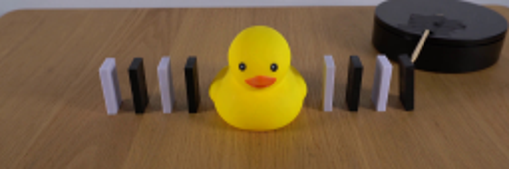
视觉工具实际返回图片 3
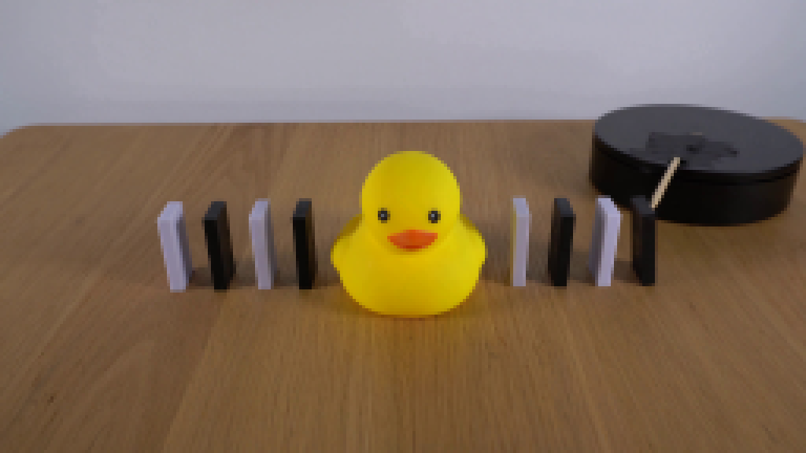
视觉工具实际返回图片 4
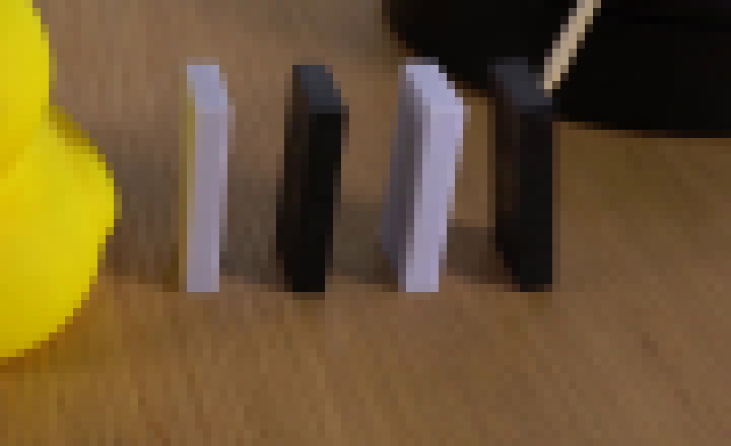
视觉工具实际返回图片 5
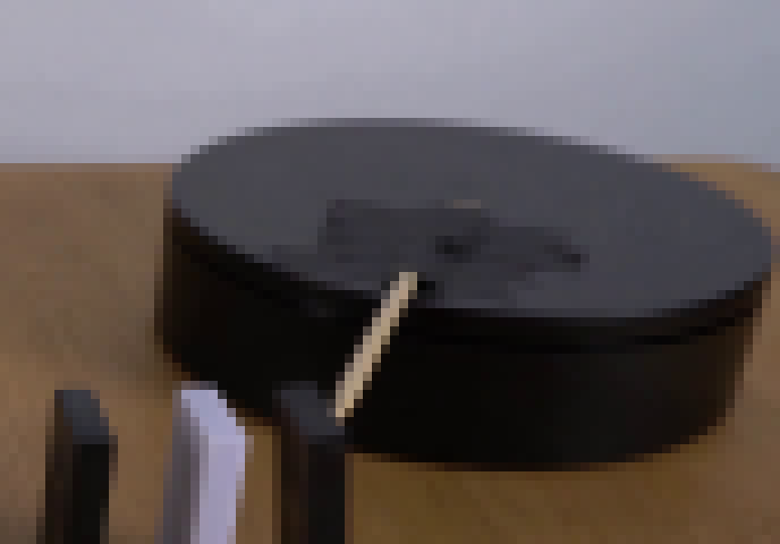
视觉工具实际返回图片 6
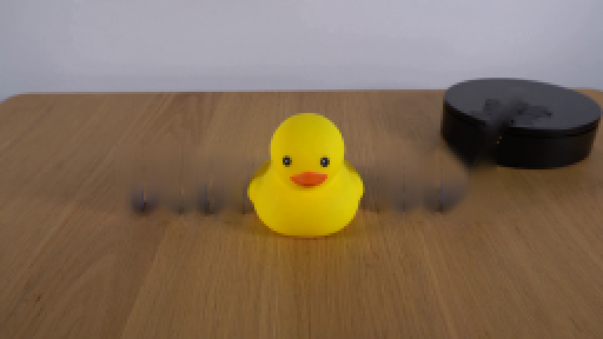
视觉工具实际返回图片 7

视觉工具实际返回图片 8

视觉工具实际返回图片 9
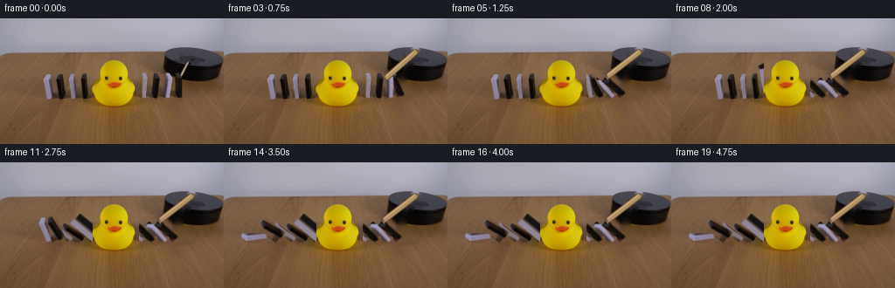
视觉工具实际返回图片 10
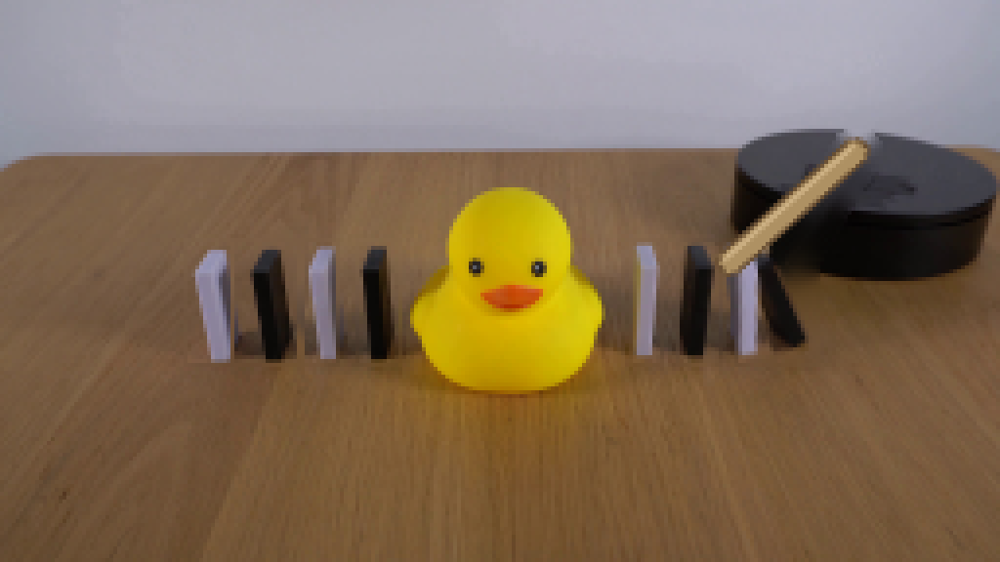
视觉工具实际返回图片 11
视觉工具实际返回图片 12
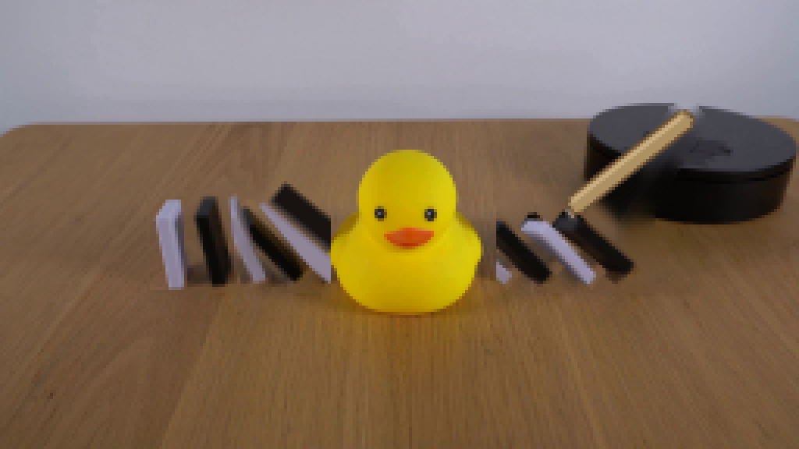
视觉工具实际返回图片 13
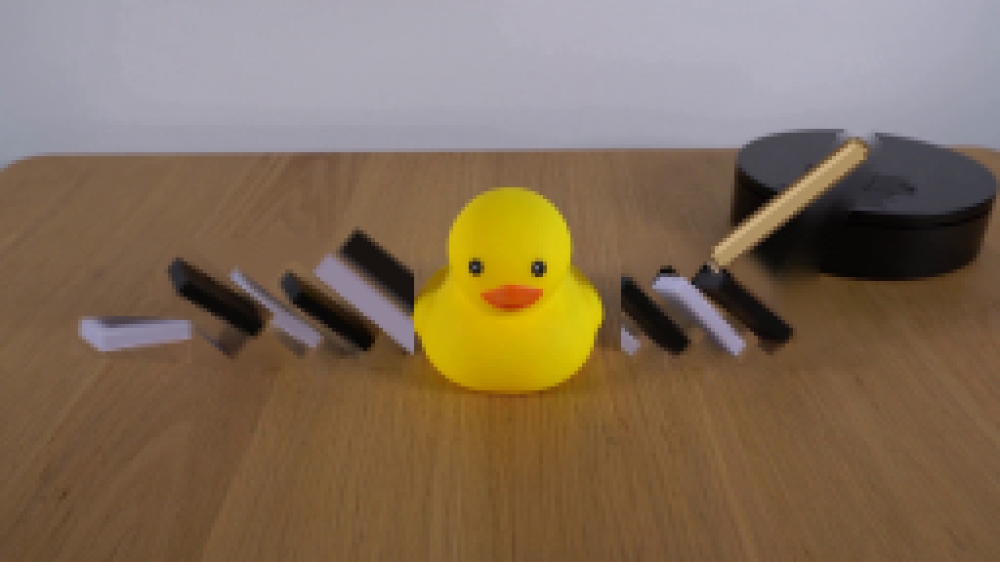
视觉工具实际返回图片 14

保存候选 4 份；完成命令 26 次；可验证图片返回 14 张。原始 API 响应与完整日志保留在本地。